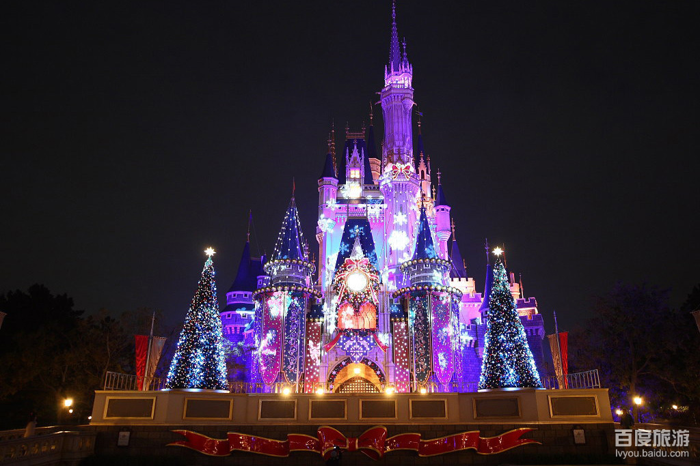
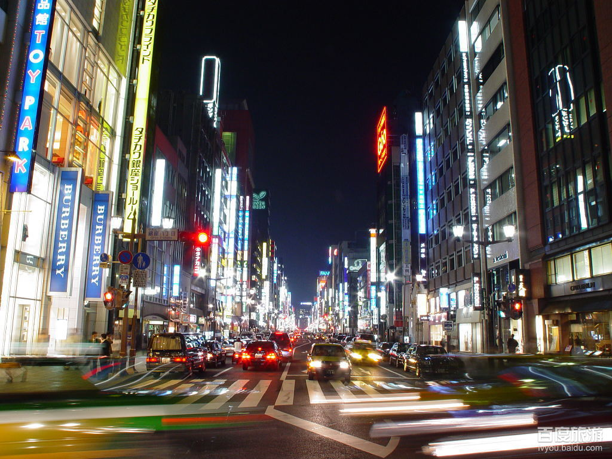
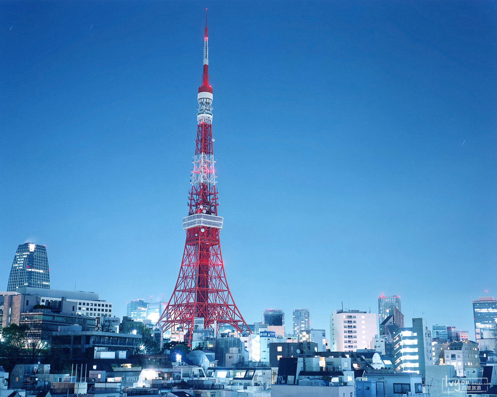
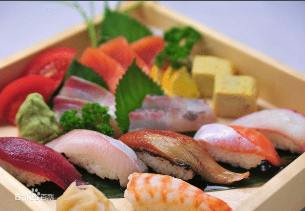
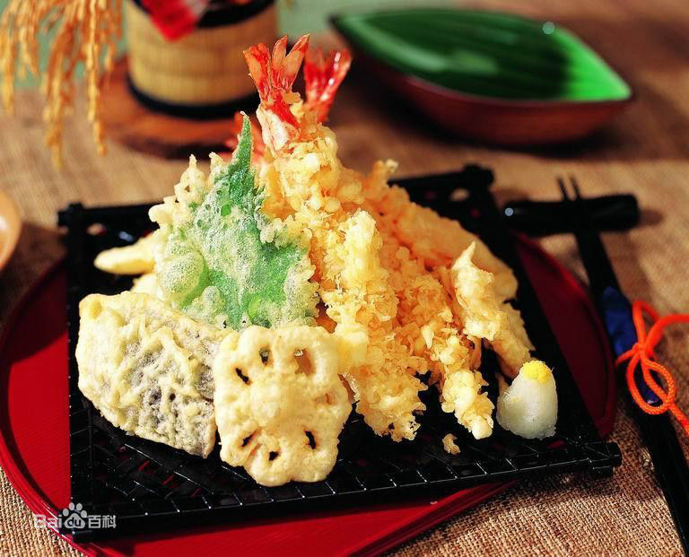
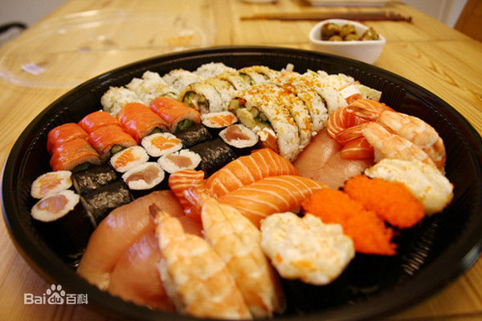

日本名古屋
关于东京
走进东京
东京（Tokyo）是日本国的首都，是亚洲第一大城市，世界第二大城市。全球最大的经济中心之一。东京的著名观光景点有东京铁塔、皇居、国会议事堂、浅草寺、浜离宫、上野公园与动物园、葛西临海公园、台场与彩虹大桥、东京迪士尼乐园、代代木公园、日比谷公园、新宿御苑、幕张奥特莱斯（outlets）、奥多摩湖、Hello kitty 乐园、明治神宫、忍野八海、池袋、上野公园、东映动漫Gallery、涩谷、升仙峡、丰田汽车会馆、筑地市场、千鸟之渊、秋叶原、二重桥、隅田公园、滨离宫庭园 Tsukiji鱼市等。比较有特色的比赛有棒球和相扑，看棒球可以到后乐园站的东京球场，那里是东京巨人队的主场。看相扑可以到秋叶原附近的两国去，那里既有两国国技馆，还有许多相扑选手所属的部屋（俱乐部），每个部屋都有自己的名号与标志。江户东京博物馆也值得一看。 山手线上的几个大站的附近地区，也是游玩和观光的好地方，比如池袋附近的太阳城（Sunshine City)里集中了许多水族馆、美术馆、博物馆，新宿附近的都厅大厦、歌舞伎町、购物区，涉谷与原宿则是日本年轻人时装、音乐、化妆、随身物品、发式、甚至生活方式的信息源。上野附近集中了如日本的传统剧场、东京国立美术馆、国立科学博物馆、国立西洋美术馆、东京都美术馆等。在银座和新宿的主街道，到了星期天，禁止车辆通行，那里就成了步行者的天堂，卖艺或公演的街头艺术家、出售各种手工制品的各国小贩、在街上玩耍的年轻人，各色人等、五花八门。
最佳季节：3月-5月是来日本旅游的最佳季节，这时候来到日本可以观赏盛开的樱花。 基本上全年都适宜旅行，东京属于海洋性气候，夏季高温多湿、常有台风，冬季气候干燥、多为晴天。3-5月是春季。早春时早晚温差比较大，但全天基本比较舒适，风和日丽，是绝好的出游时机。6--8月是一年里最热的季节。特别是梅雨刚过去的7月--8月的气温超过30℃，湿度很高，每天都是盛夏的闷热天气。9-11月是秋季。9月还会有白天温度30℃以上的盛夏天气，到了10月就会有台风。 12-2月是冬季，气温偏低。虽然偶尔会下雪，但是市中心不会积雪。 东京的四月份正值樱花盛开的时节，漫山遍野的樱花铺满了东京的大街小巷，是去东京赏樱花的最佳季节。
建议游玩：3-5天
人均花费：￥5000
签证难度：一般
推荐游览路线
Day1:大阪
Day2:大阪 -日本环球电影城
Day3:大阪 -大阪城 -大阪城天守阁 -心斋桥 -道顿堀
Day4:奈良 -奈良公园 -东大寺
Day5:东京 -东京塔 -银座
Day6:东京迪士尼乐园 -火鸡腿
Day7:箱根
Day8:东京 -皇居 -日本二重桥 -浅草寺 -仲见世商店街 -上野公园
Day9:东京 -秋叶原 -银座
Day10:东京
不可错过
---------------必玩景点排行榜---------------
Top 1--->东京迪士尼乐园

Top 2--->银座

Top 3--->东京铁塔

---------------必吃美食排行榜---------------
Top 1--->刺身（生鱼片）

Top 2--->天妇罗

Top 3--->寿司
